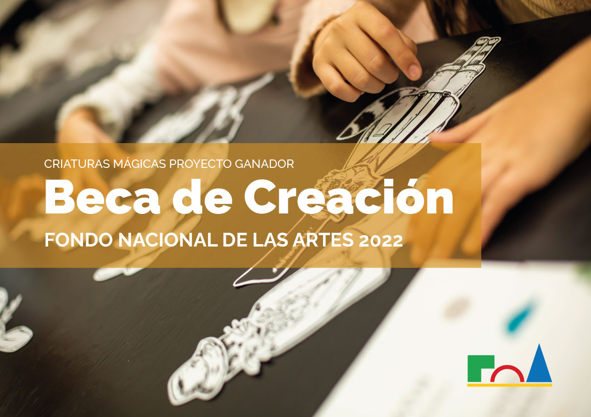

Sobre Mi
Soy Marianela, arquitecta, ilustradora y trabajadora cultural entrerriana
Dedicada desde mis inicios a integrar diferentes lenguajes y disciplinas para aplicarlo en trabajos creativos con un enfoque proyectual. Vivo en Argentina, me gradué como arquitecta en Santa Fe en la UNL, estudié becada en Curitiba, Brasil y luego residí en Buenos Aires, me formé en Bellas Artes en la ESEA Manuel Belgrano y en escenografía en el CC San Martín. Un poco de cada uno de esos lugares, habita en mí y se refleja en mi producción. Dibujar es mi manera de pensar y transmitir lo que siento. La naturaleza, la imaginación, lo femenino y los espacios son algunas de las temáticas que desarrollo e ilustraciones.


Cooperativa de trabajo La Cultural
Creo en las construcciones colaborativas, donde todos nos ayudamos y crecemos con la mirada del otro. En ese camino, soy una de las fundadoras de la Cooperativa de trabajo La Cultural que nuclea a artistas de diferentes áreas. En 2022, fui ganadora de la Beca de Creación del Fondo Nacional de las Artes con el proyecto "Criaturas Mágicas, personajes e historias para armar".